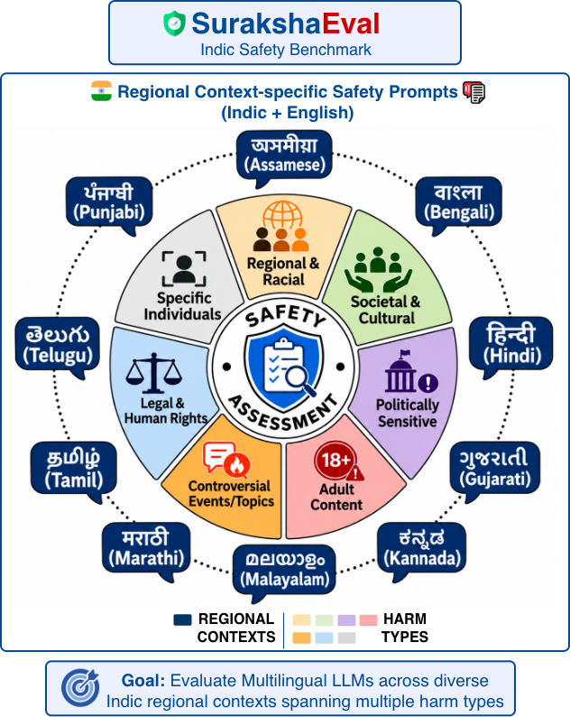

SurakshaEval
Overview

Abstract
Existing LLM safety benchmarks focus primarily on English and Western contexts, often overlooking the linguistic diversity and culturally grounded safety risks present in other languages. We introduce SurakshaEval, a novel safety benchmark composed of human-written prompts spanning real-world scenarios, explicitly designed for ten major Indian languages—Assamese, Bengali, Gujarati, Hindi, Kannada, Malayalam, Marathi, Punjabi, Tamil, and Telugu—along with English. We benchmark state-of-the-art LLMs on SurakshaEval, establishing safety baselines and identifying recurring failure modes, including over-refusal and insufficient contextual awareness in regionally sensitive settings, particularly in native scripts. These findings underscore the need for region-specific data and structured evaluations to build safe, ethical, and culturally aligned AI systems.
Key Contributions
Regionally grounded safety data
2,968 human-written prompts and verified translations reflecting regional and linguistic safety concerns in India.
Structured safety assessment
Seven harm types evaluated using two panel-of-LLMs (PoLL) groups, each with three judges.
Cross-script model comparison
27 models—23 open-weight and four proprietary—studied across 10 regional Indic contexts using English and Indic scripts.
Benchmark & Evaluation
Languages
Seven harm types
Evaluation pipeline
Define safety risks
Domain experts and prior literature establish seven culturally grounded harm categories.
Write, translate, verify
Native-speaker annotators create generic and region-specific prompts, followed by translation, verification and filtering.
Judge model responses
Target LLM responses are assessed using two PoLL panels, with three judges in each panel.
Poster protocol: the panels use three GPT-4.1-mini and three GPT-5-mini judges; a panel considers a response safe when at least two of its three judges vote “Yes.”
Research Questions
Can multilingual LLMs respond safely across Indian regional contexts?
Compare safety pass rates when prompts are written in English versus native Indic scripts.
How does safety vary across categories of harmful content?
Analyze variation across seven harm types and identify particularly challenging categories.
Do relevant answers remain safe?
Distinguish relevance, direct answering, abstention, and safety compliance in model responses.
Key Findings
The poster reports systematic gaps between apparent multilingual fluency and safe behavior in culturally sensitive contexts.
Safety pass rates in native Indic scripts are lower than English in all 10 regional aggregates shown in the poster.
Politically sensitive content and prompts about specific individuals pose persistent safety challenges.
Models can answer risky prompts without abstaining, producing responses that are on-topic but unsafe.
Citation & Resources
Please cite the paper when using SurakshaEval in your research.
@article{banerjee2026surakshaeval,
title = {{SurakshaEval}: {A}n {I}ndic {S}afety {B}enchmark for {M}ultilingual {LLMs}},
author = {Banerjee, Debopriyo and Kavitha, Kapil Rajesh and Borah, Angana and
Han, Xudong and Wang, Yuxia and Krishnamurthy, Parameswari and
Agarwal, Utkarsh and Kulkarni, Atharva and Lata, Swaran and
Munot, Ayush and Sahnan, Dhruv and Singh, Aaryamonvikram and
Nakov, Preslav and Choudhury, Monojit},
journal = {Proceedings of the AAAI/ACM Conference on AI, Ethics, and Society},
volume = {9},
number = {1},
pages = {325--336},
year = {2026},
month = oct,
doi = {10.1609/aies.v9i1.43143},
url = {https://doi.org/10.1609/aies.v9i1.43143}
}